import polars as pl
import plotnine_polars as p9
from plotnine_polars import aes, position_jitter
from socviz_pl import load_data, theme_socviz
from plotnine._mpl.gridspec import p9GridSpec
if not hasattr(p9GridSpec, "locally_modified_subplot_params"):
p9GridSpec.locally_modified_subplot_params = lambda self: []
p9.theme_set(theme_socviz())
gss_sm = load_data("gss_sm")
religion_levels = ["Protestant", "Catholic", "Jewish", "None", "Other", "NA"]5 Graph Tables, Add Labels, Make Notes
5.1 Use Pipes to Summarize Data
rel_by_region = (
gss_sm
.with_columns(religion=pl.col("religion").fill_null("NA"))
.group_by("bigregion", "religion")
.agg(n=pl.len())
.with_columns(
freq=pl.col("n") / pl.col("n").sum().over("bigregion")
)
.with_columns(
pct=(pl.col("freq") * 100).round(0)
)
.sort("bigregion", "religion")
)rel_by_region
shape: (24, 5)
| bigregion | religion | n | freq | pct |
|---|---|---|---|---|
| str | str | u32 | f64 | f64 |
| "Midwest" | "Catholic" | 172 | 0.247482 | 25.0 |
| "Midwest" | "Jewish" | 3 | 0.004317 | 0.0 |
| "Midwest" | "NA" | 5 | 0.007194 | 1.0 |
| "Midwest" | "None" | 157 | 0.225899 | 23.0 |
| "Midwest" | "Other" | 33 | 0.047482 | 5.0 |
| … | … | … | … | … |
| "West" | "Jewish" | 10 | 0.015823 | 2.0 |
| "West" | "NA" | 1 | 0.001582 | 0.0 |
| "West" | "None" | 180 | 0.28481 | 28.0 |
| "West" | "Other" | 48 | 0.075949 | 8.0 |
| "West" | "Protestant" | 238 | 0.376582 | 38.0 |
rel_by_region.group_by("bigregion").agg(sum=pl.col("pct").sum())
shape: (4, 2)
| bigregion | sum |
|---|---|
| str | f64 |
| "Midwest" | 101.0 |
| "Northeast" | 100.0 |
| "South" | 100.0 |
| "West" | 101.0 |
(
rel_by_region
.ggplot(aes(x="bigregion", y="pct", fill="religion"))
.geom_col(position="dodge2")
.labs(x="Region", y="Percent", fill="Religion")
.add_theme(legend_position="top")
)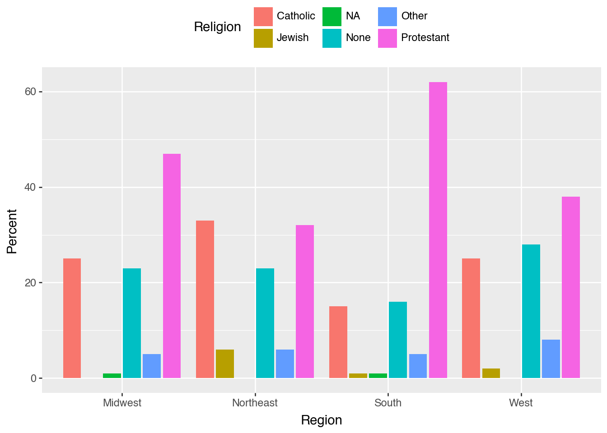
(
rel_by_region
.ggplot(aes(y="pct", x="religion", fill="religion"))
.geom_col()
.coord_flip()
.labs(y="Percent", x=None, fill="Religion")
.add_guides(fill="none")
.scale_x_discrete(limits=religion_levels)
.facet_grid(cols="bigregion")
)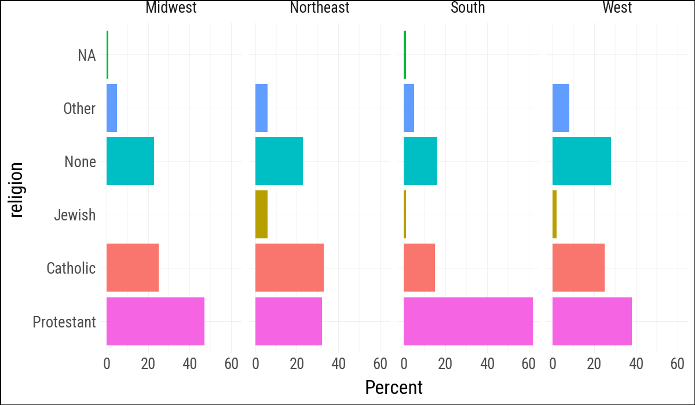
5.2 More Geoms
organdata = load_data("organdata")
country_order = (
organdata
.group_by("country")
.agg(pl.col("donors").median().alias("med"))
.sort("med")
.get_column("country")
.to_list()
)
organdata = organdata.with_columns(
pl.col("country").cast(pl.Enum(country_order))
)organdata.select(pl.all().exclude("pop")).sample(n=10, seed=123)
shape: (10, 20)
| country | year | donors | pop_dens | gdp | gdp_lag | health | health_lag | pubhealth | roads | cerebvas | assault | external | txp_pop | world | opt | consent_law | consent_practice | consistent | ccode |
|---|---|---|---|---|---|---|---|---|---|---|---|---|---|---|---|---|---|---|---|
| enum | date | f64 | f64 | f64 | f64 | f64 | f64 | f64 | f64 | f64 | f64 | f64 | f64 | str | str | str | str | str | str |
| "Netherlands" | 1997-01-01 | 14.4 | 37.589694 | 23753.0 | 22541.0 | 1936.0 | 1878.0 | 5.5 | 74.498751 | 563.0 | 13.0 | 282.0 | 0.704631 | "SocDem" | "In" | "Informed" | "Informed" | "Yes" | "Neth" |
| "Sweden" | 2000-01-01 | 10.9 | 1.971731 | 26574.0 | 25099.0 | 2243.0 | 2119.0 | 7.2 | 65.374211 | 555.0 | 10.0 | 352.0 | 0.676285 | "SocDem" | "Out" | "Presumed" | "Informed" | "No" | "Swe" |
| "Netherlands" | null | null | null | null | 28983.0 | 2831.0 | 2643.0 | null | null | null | null | null | null | "SocDem" | "In" | "Informed" | "Informed" | "Yes" | "Neth" |
| "Italy" | 1999-01-01 | 13.7 | 19.129887 | 23729.0 | 23291.0 | 1853.0 | 1800.0 | 5.6 | 115.064358 | 627.0 | 11.0 | 343.0 | 0.451029 | "Corporatist" | "In" | "Presumed" | "Informed" | "No" | "Ita" |
| "Australia" | null | null | null | null | 28168.0 | 2754.0 | 2629.0 | null | null | null | null | null | null | "Liberal" | "In" | "Informed" | "Informed" | "Yes" | "Oz" |
| "Netherlands" | null | null | 36.002889 | 17707.0 | 16580.0 | 1419.0 | 1320.0 | 5.4 | 92.027822 | 649.0 | 9.0 | 310.0 | 0.735688 | "SocDem" | "In" | "Informed" | "Informed" | "Yes" | "Neth" |
| "Spain" | 2002-01-01 | 33.7 | 8.275658 | 21592.0 | 20864.0 | 1646.0 | 1567.0 | 5.4 | 127.692602 | 416.0 | 11.0 | 345.0 | 0.668673 | null | "Out" | "Presumed" | "Informed" | "No" | "Spa" |
| "United Kingdom" | 1995-01-01 | 14.4 | 23.879215 | 19998.0 | 18994.0 | 1393.0 | 1331.0 | 5.8 | 64.908198 | 718.0 | 10.0 | 279.0 | 0.706836 | "Liberal" | "In" | "Informed" | "Informed" | "Yes" | "UK" |
| "United States" | 1991-01-01 | 17.89 | 2.627258 | 23443.0 | 23038.0 | 2957.0 | 2738.0 | 5.2 | 164.075563 | 457.0 | 103.0 | 565.0 | 1.083085 | "Liberal" | "In" | "Informed" | "Informed" | "Yes" | "USA" |
| "Netherlands" | 2002-01-01 | 12.6 | 38.885143 | 28983.0 | 28756.0 | 2643.0 | 2455.0 | 5.5 | 61.118336 | 500.0 | 9.0 | 258.0 | 0.681157 | "SocDem" | "In" | "Informed" | "Informed" | "Yes" | "Neth" |
(
organdata
.ggplot(aes(x="year", y="donors"))
.geom_point()
)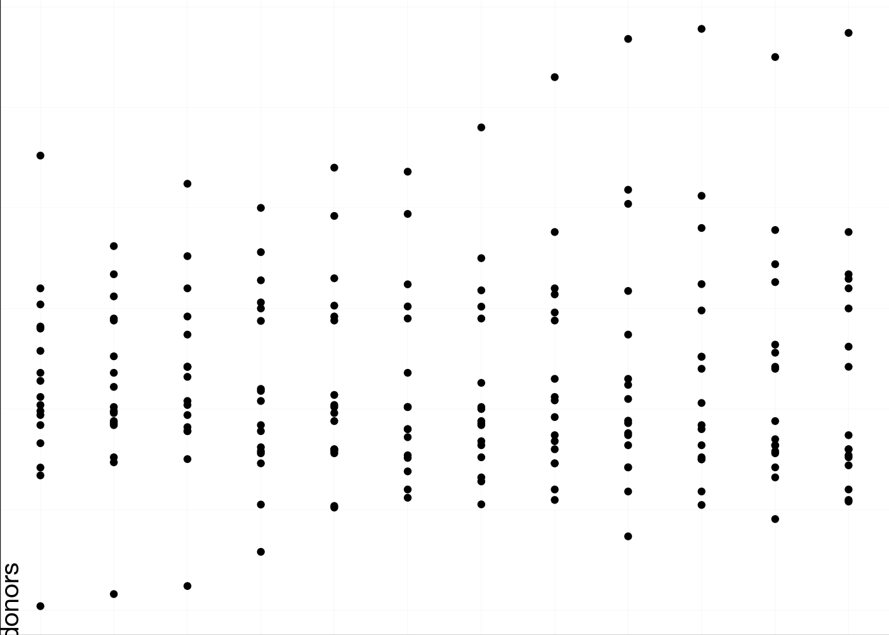
(
organdata
.ggplot(aes(x="year", y="donors"))
.geom_line(aes(group="country"))
.facet_wrap("country", ncol=4)
)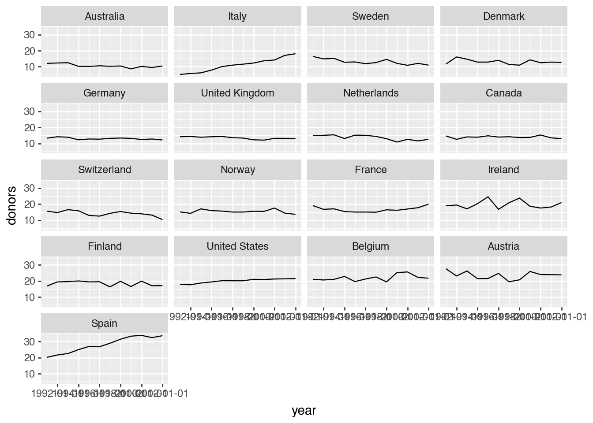
(
organdata
.ggplot(aes(x="country", y="donors"))
.geom_boxplot()
)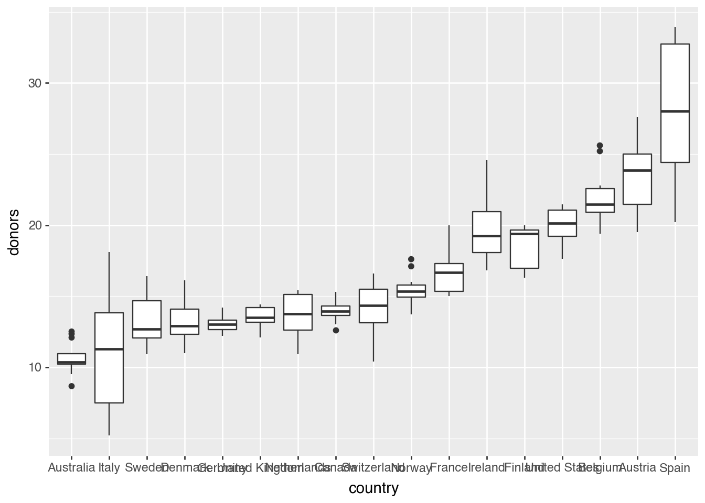
The R plot just flips the aes() arguments. This does not work with plotnine, but .coord_flip() does.
(
organdata
.ggplot(aes(x="country", y="donors"))
.geom_boxplot()
.coord_flip()
)
(
organdata
.sort("donors")
.ggplot(aes(y="donors", x="country"))
.geom_boxplot()
.labs(y=None)
.coord_flip()
)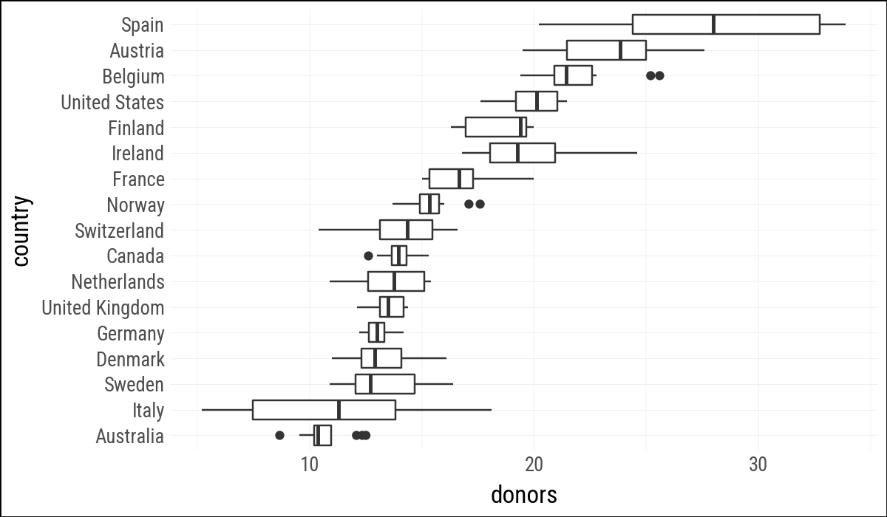
(
organdata
.ggplot(aes(y="donors", x="country", fill="world"))
.geom_boxplot()
.labs(y=None, fill="World")
.add_theme(legend_position="top")
.coord_flip()
)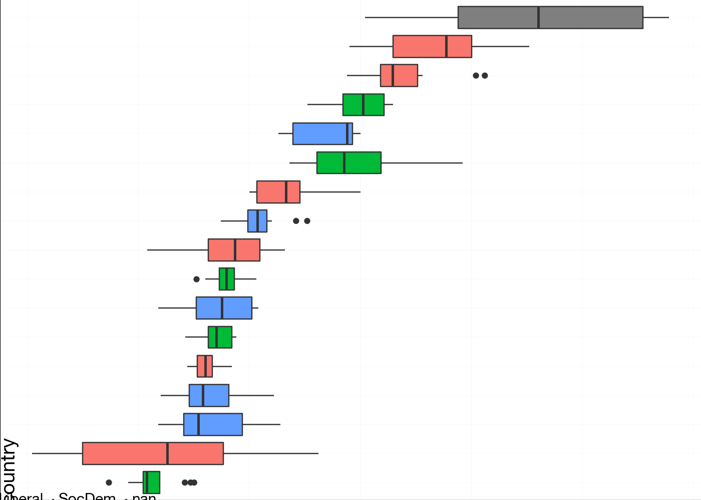
(
organdata
.ggplot(aes(x="donors", y="country", color="world"))
.geom_point()
.labs(y=None)
.add_theme(legend_position="top")
)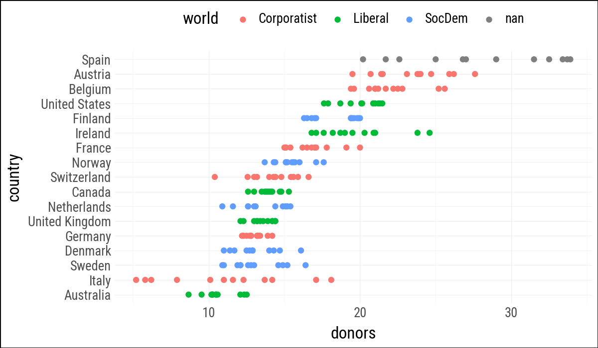
(
organdata
.ggplot(aes(x="donors", y="country", color="world"))
.geom_jitter()
.labs(y=None)
.add_theme(legend_position="top")
)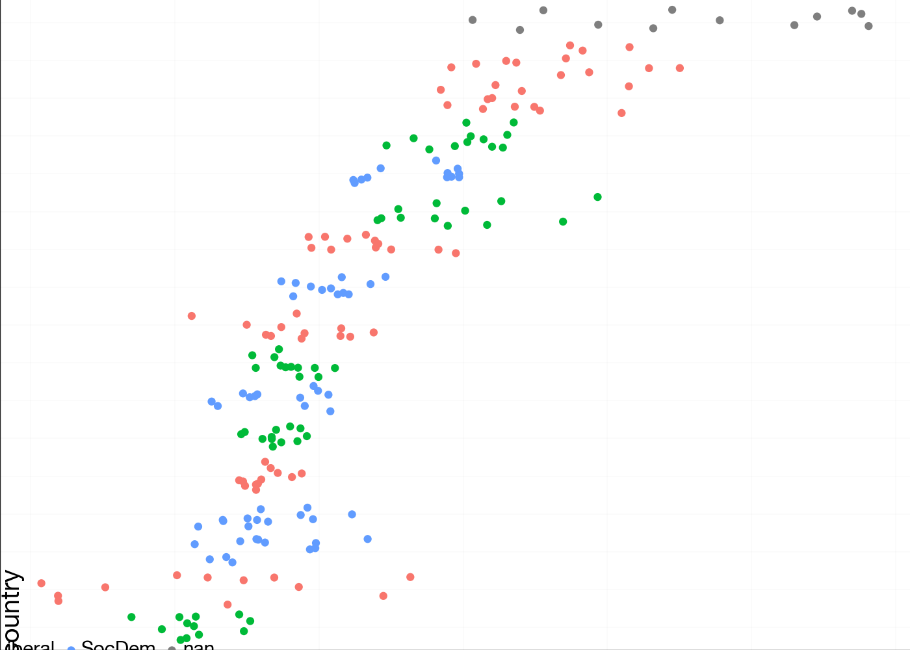
(
organdata
.ggplot(aes(x="donors", y="country", color="world"))
.geom_jitter(position=position_jitter(height=0.15))
.labs(y=None)
.add_theme(legend_position="top")
)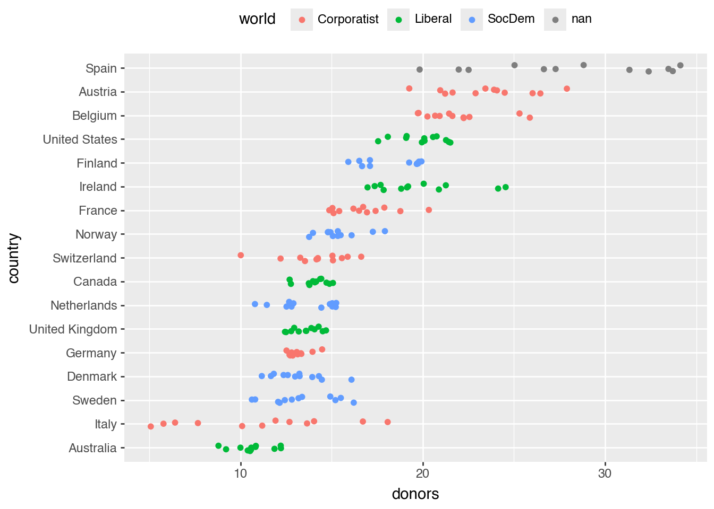
5.3 Grouped Summaries
cols=["donors", "gdp", "health", "roads", "cerebvas"]
by_country = (
organdata
.group_by("consent_law", "country")
.agg(
pl.col(cols).mean().name.suffix("_mean"),
pl.col(cols).std().name.suffix("_sd"),
)
.sort("donors_mean")
)
by_country = by_country.with_columns(
pl.col("country").cast(pl.Enum(by_country["country"].to_list()))
)
by_country
shape: (17, 12)
| consent_law | country | donors_mean | gdp_mean | health_mean | roads_mean | cerebvas_mean | donors_sd | gdp_sd | health_sd | roads_sd | cerebvas_sd |
|---|---|---|---|---|---|---|---|---|---|---|---|
| str | enum | f64 | f64 | f64 | f64 | f64 | f64 | f64 | f64 | f64 | f64 |
| "Informed" | "Australia" | 10.635 | 22178.538462 | 1957.5 | 104.875728 | 557.692308 | 1.142808 | 3958.505665 | 481.627649 | 14.327316 | 82.698634 |
| "Presumed" | "Italy" | 11.1 | 21554.153846 | 1757.0 | 121.942937 | 712.153846 | 4.277 | 2781.30898 | 271.237903 | 10.157891 | 118.032373 |
| "Informed" | "Germany" | 13.041667 | 22163.230769 | 2348.75 | 112.788734 | 706.769231 | 0.611196 | 2501.344177 | 377.227474 | 25.911094 | 126.03515 |
| "Informed" | "Denmark" | 13.091667 | 23722.307692 | 2054.071429 | 101.636346 | 640.692308 | 1.468121 | 3895.685292 | 371.361417 | 12.421001 | 46.271634 |
| "Presumed" | "Sweden" | 13.125 | 22415.461538 | 1951.357143 | 72.345753 | 595.307692 | 1.753503 | 3213.468391 | 372.978986 | 13.246919 | 49.684647 |
| … | … | … | … | … | … | … | … | … | … | … | … |
| "Informed" | "Ireland" | 19.791667 | 20824.384615 | 1479.928571 | 117.774245 | 704.692308 | 2.478437 | 6669.580078 | 565.552618 | 10.761587 | 87.203196 |
| "Informed" | "United States" | 19.981667 | 29211.769231 | 3988.285714 | 155.167832 | 444.384615 | 1.325367 | 4571.159958 | 864.931961 | 8.35381 | 16.049603 |
| "Presumed" | "Belgium" | 21.9 | 22499.615385 | 1958.357143 | 154.695038 | 593.846154 | 1.935787 | 3170.583636 | 405.114154 | 20.556129 | 55.249202 |
| "Presumed" | "Austria" | 23.525 | 23875.846154 | 1875.357143 | 149.865413 | 768.846154 | 2.415904 | 3342.88944 | 296.897964 | 30.281692 | 119.642416 |
| "Presumed" | "Spain" | 28.108333 | 16933.0 | 1289.071429 | 161.1143 | 654.769231 | 4.963038 | 2888.342547 | 265.896008 | 35.251103 | 138.650132 |
(
by_country
.ggplot(aes(
x="donors_mean",
y="country",
color="consent_law"
))
.geom_point(size=3)
.labs(x="Donor Procurement Rate", y=None, color="Consent Law")
.add_theme(legend_position="top")
)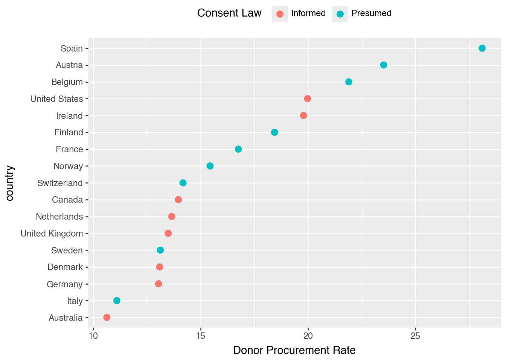
(
by_country
.ggplot(aes(x="donors_mean", y="country"))
.geom_point(size=3)
.facet_wrap("consent_law", scales="free_y", ncol=1)
.labs(x="Donor Procurement Rate", y=None)
)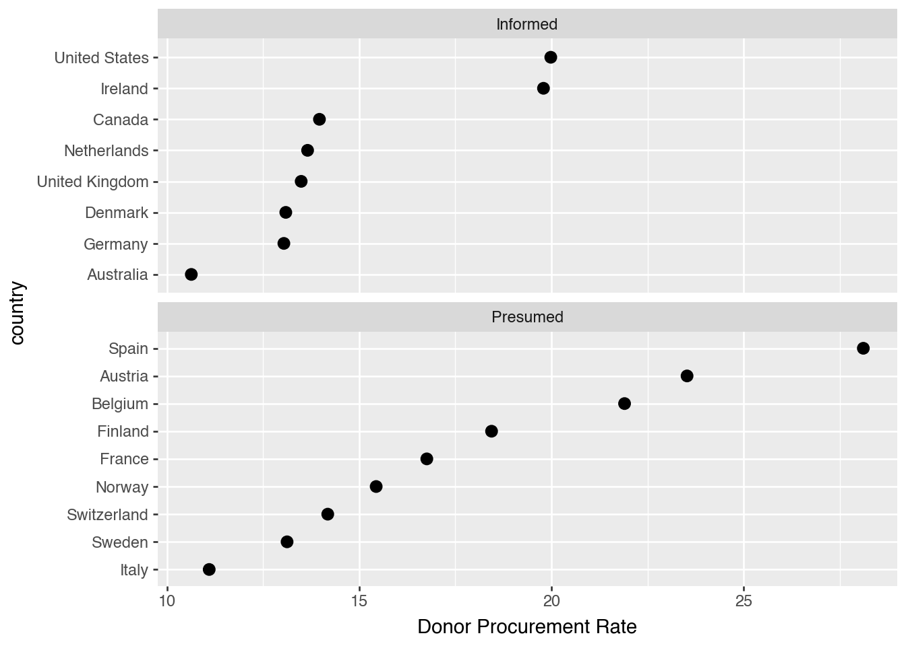
Plotnine’s geom_pointrange() expects vertical ranges, so the horizontal version uses geom_errorbarh() plus points.
(
by_country
.ggplot(aes(x="donors_mean", y="country"))
.geom_errorbarh(
aes(xmin="donors_mean - donors_sd",
xmax="donors_mean + donors_sd"),
height=0.2
)
.geom_point(size=2)
.labs(x="Donor Procurement Rate", y=None)
)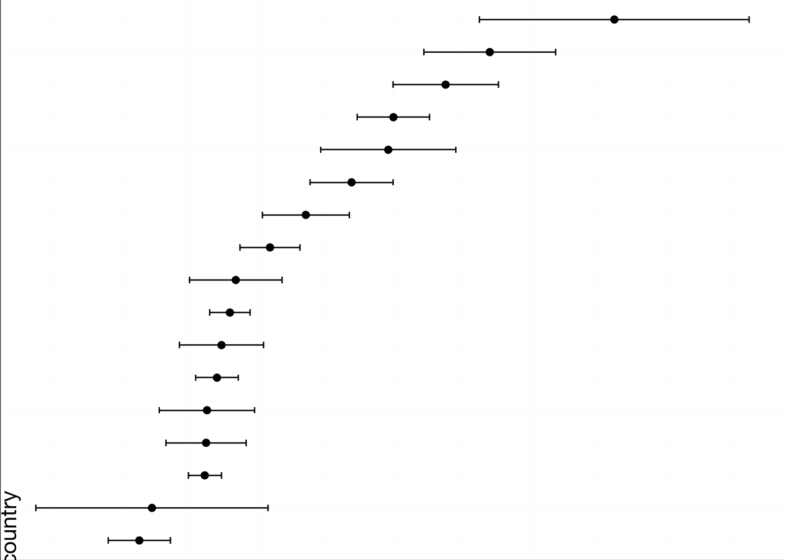
5.4 Label Outliers
Plotnine does not provide geom_text_repel() directly, but geom_text() can use the adjustText package via its adjust_text argument. This gives us a close approximation.
(
by_country
.ggplot(aes(x="gdp_mean", y="health_mean"))
.geom_point()
.geom_text(data=by_country.filter(pl.col("gdp_mean") > 25_000),
mapping=aes(label="country"))
)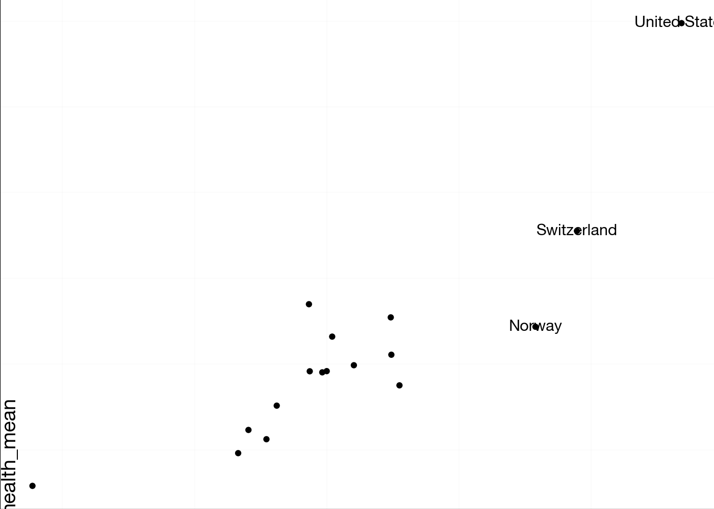
(
by_country
.ggplot(aes(x="gdp_mean", y="health_mean"))
.geom_point()
.geom_text(
data=by_country.filter(
(pl.col("gdp_mean") > 25_000) |
(pl.col("health_mean") > 1500) |
(pl.col("country").is_in(["Belgium"]))
),
mapping=aes(label="country"))
)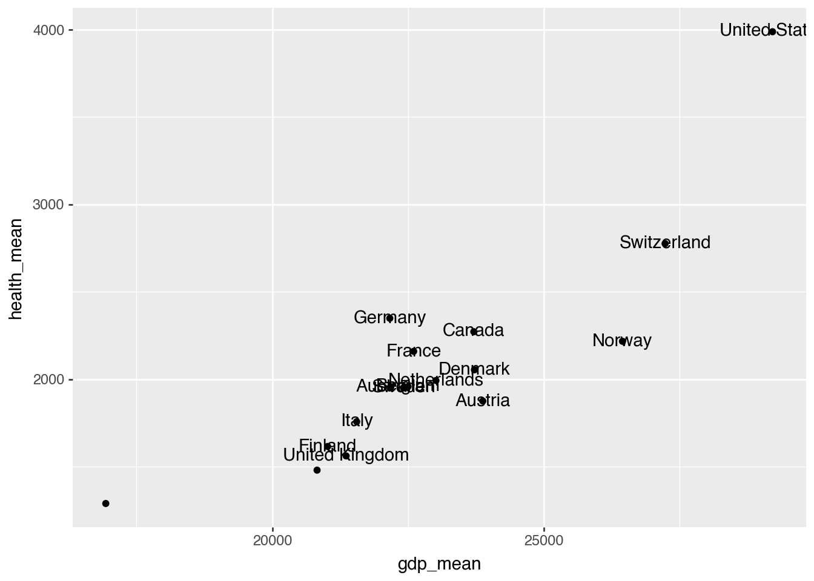
(
by_country
.ggplot(aes(x="roads_mean", y="donors_mean"))
.geom_point()
.geom_text(aes(label="country"),
adjust_text={"arrowprops": {"arrowstyle": "-"}})
)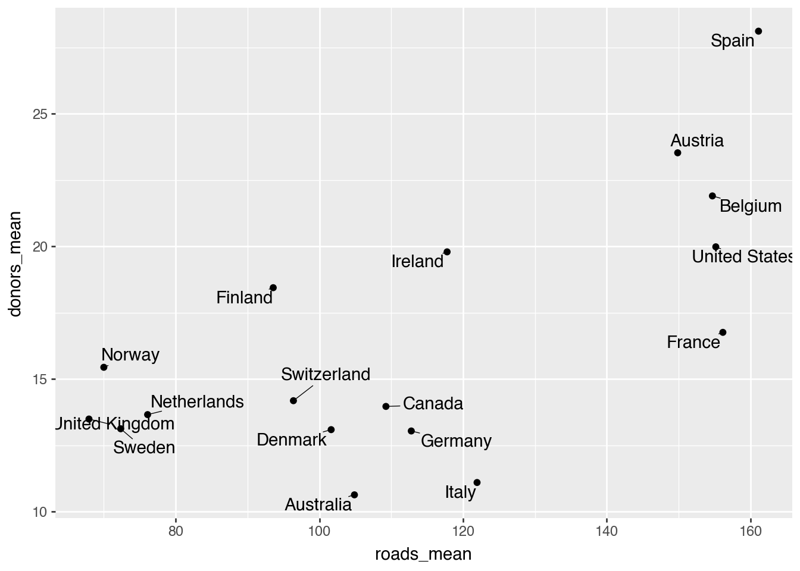
(
by_country
.ggplot(aes(x="roads_mean", y="donors_mean"))
.geom_point()
.geom_text(
aes(label="country"),
adjust_text={"arrowprops": {"arrowstyle": "-"}}
)
)(
by_country
.ggplot(aes(x="gdp_mean", y="health_mean"))
.geom_point()
.geom_text(
data=by_country.filter(pl.col("gdp_mean") > 25_000),
mapping=aes(label="country"),
adjust_text={"arrowprops": {"arrowstyle": "-"}}
)
)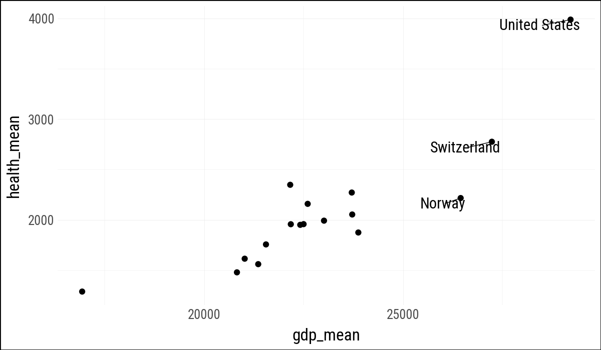
(
by_country
.ggplot(aes(x="gdp_mean", y="health_mean"))
.geom_point()
.geom_text(
data=by_country.filter(
(pl.col("gdp_mean") > 25_000) |
(pl.col("health_mean") < 1_500) |
(pl.col("country") == "Belgium")
),
mapping=aes(label="country"),
adjust_text={"arrowprops": {"arrowstyle": "-"}}
)
)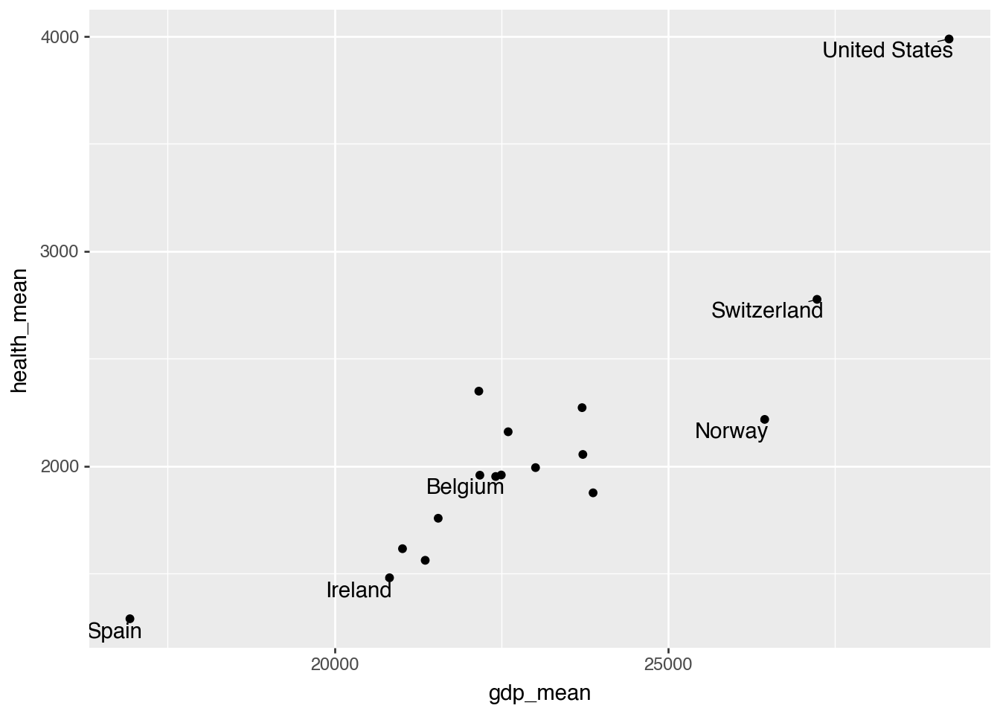
my_organdata = organdata.with_columns(
ind=(
pl.col("ccode").is_in(["Ita", "Spa"]) &
(pl.col("year").dt.year() > 1998)
)
)
(
my_organdata
.ggplot(aes(x="roads", y="donors", color="ind"))
.geom_point()
.geom_text(
data=my_organdata.filter(pl.col("ind")),
mapping=aes(label="ccode"),
adjust_text={"arrowprops": {"arrowstyle": "-"}}
)
.add_guides(color="none")
)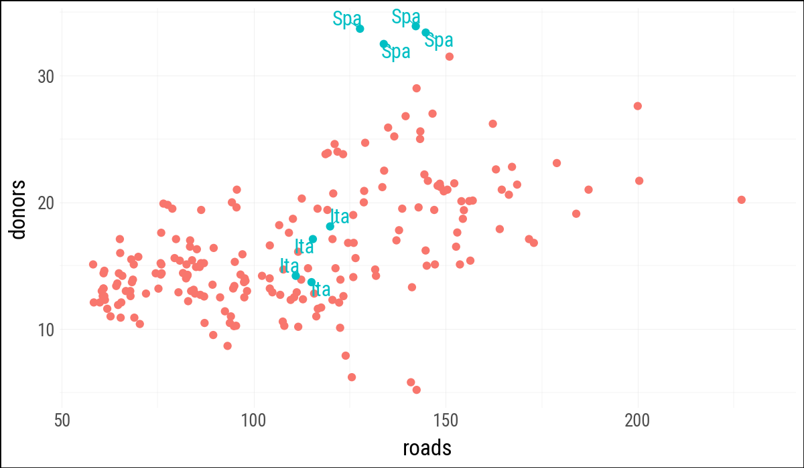
elections_historic = load_data("elections_historic")
p_title = "Popular Vote and Electoral College Shares"
p_subtitle = "1824-2024"
x_label = "Winner's share of Popular Vote"
y_label = "Winner's share of Electoral College Votes"
(
elections_historic
.ggplot(aes(x="popular_pct", y="ec_pct"))
.geom_hline(yintercept=0.5, size=1.4, color="#CCCCCC")
.geom_vline(xintercept=0.5, size=1.4, color="#CCCCCC")
.geom_point(size=0.4)
.geom_text(
aes(label="winner_label"),
size=4,
adjust_text={
"arrowprops": {"arrowstyle": "-", "color": "gray"},
"min_arrow_len": 1,
"force_static": (0.01, 0.01),
"force_text": (0.01, 0.01),
}
)
.scale_x_continuous(labels=lambda lst: [f"{v:.0%}" for v in lst])
.scale_y_continuous(labels=lambda lst: [f"{v:.0%}" for v in lst])
.labs(x=x_label, y=y_label, title=p_title, subtitle=p_subtitle)
)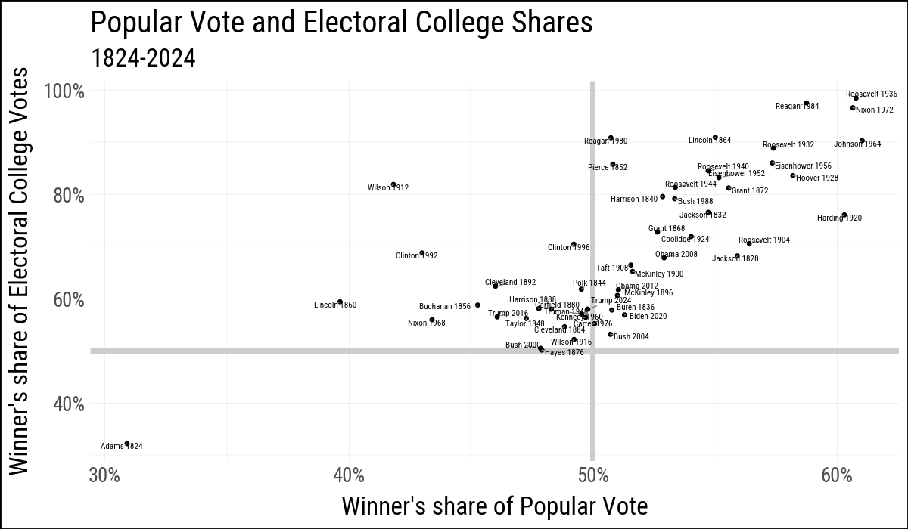
5.5 Add Annotations
The original R example also shows I() for placing annotations with relative coordinates inside the plotting area. There does not appear to be a direct I() equivalent for annotate() in plotnine, so these examples use data coordinates.
(
organdata
.ggplot(aes(x="roads", y="donors"))
.geom_point()
.annotate(
"text",
x=91,
y=33,
size=8,
label="A surprisingly high\nrecovery rate.",
lineheight=0.9,
ha="left"
)
)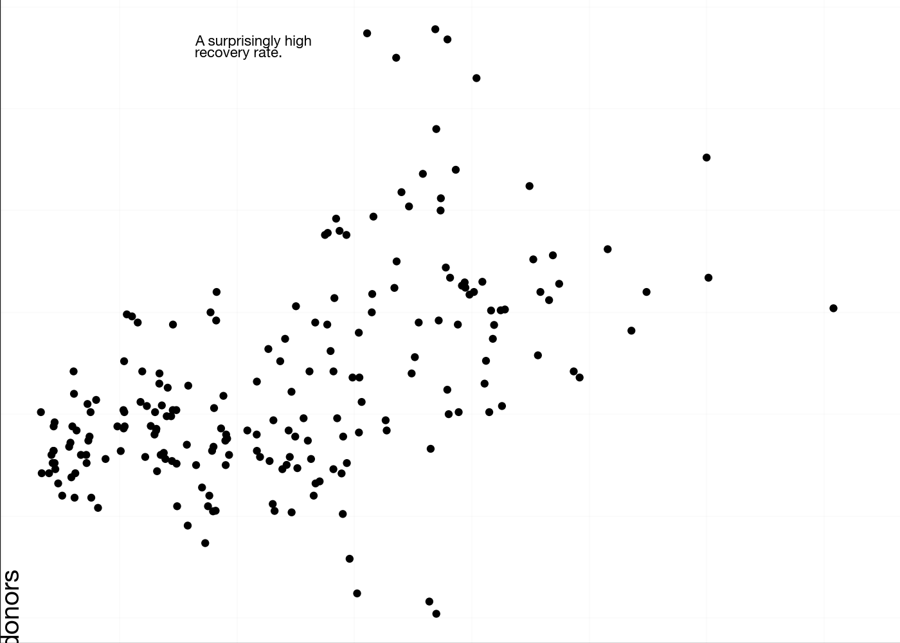
(
organdata
.ggplot(aes(x="roads", y="donors"))
.geom_point()
.annotate(
"rect",
xmin=125,
xmax=155,
ymin=30,
ymax=35,
fill="red",
alpha=0.2
)
.annotate(
"text",
x=157,
y=33,
size=8,
label="A surprisingly high\nrecovery rate.",
lineheight=0.9,
ha="left"
)
)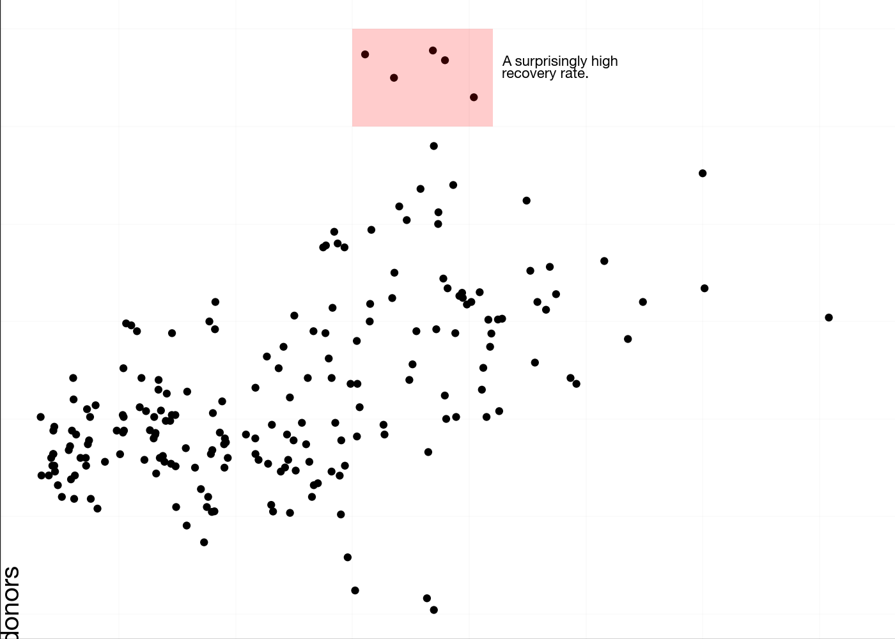
5.6 Understanding Scales, Guides, and Themes
(
organdata
.ggplot(aes(x="roads", y="donors", color="world"))
.geom_point()
)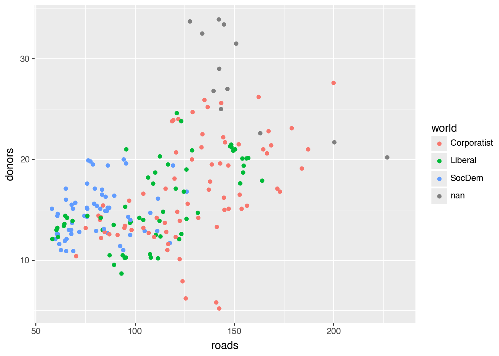
(
organdata
.ggplot(aes(x="roads", y="donors", color="world"))
.geom_point()
.scale_x_log10()
.scale_y_continuous(
breaks=[5, 15, 25],
labels=["Five", "Fifteen", "Twenty Five"]
)
)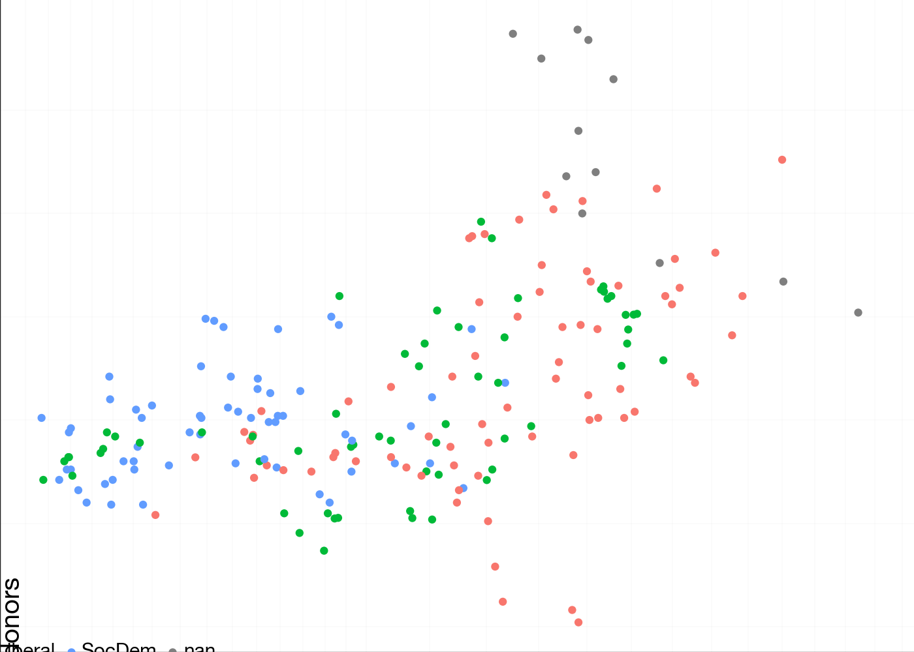
(
organdata
.ggplot(aes(x="roads", y="donors", color="world"))
.geom_point()
.scale_color_discrete(
labels=["Corporatist", "Liberal", "Social Democratic", "Unclassified"]
)
.labs(
x="Road Deaths",
y="Donor Procurement",
color="Welfare State"
)
)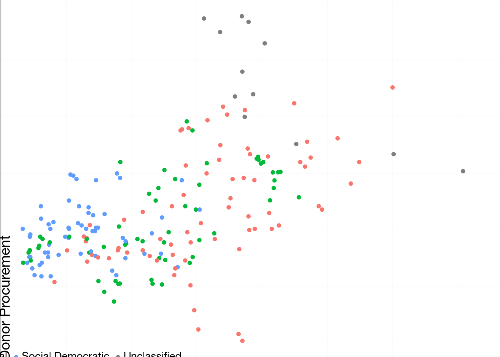
(
organdata
.ggplot(aes(x="roads", y="donors", color="world"))
.geom_point()
.labs(x="Road Deaths", y="Donor Procurement")
.add_guides(color="none")
)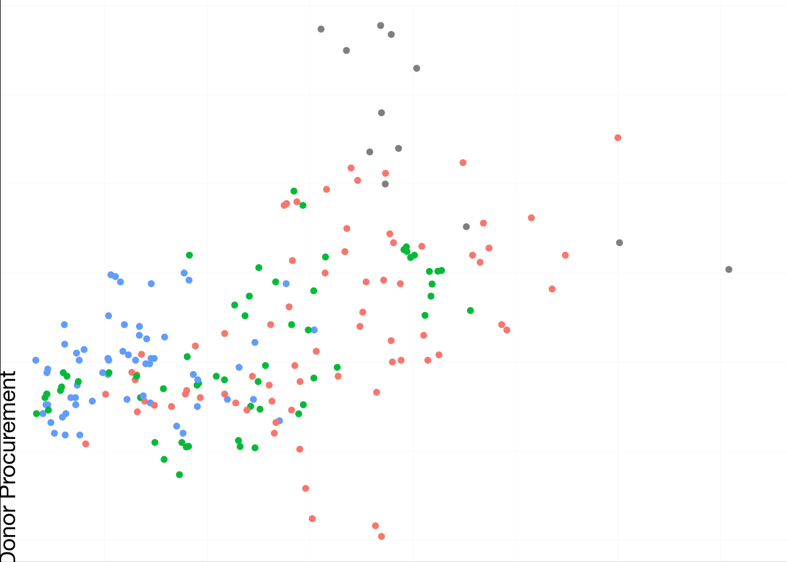